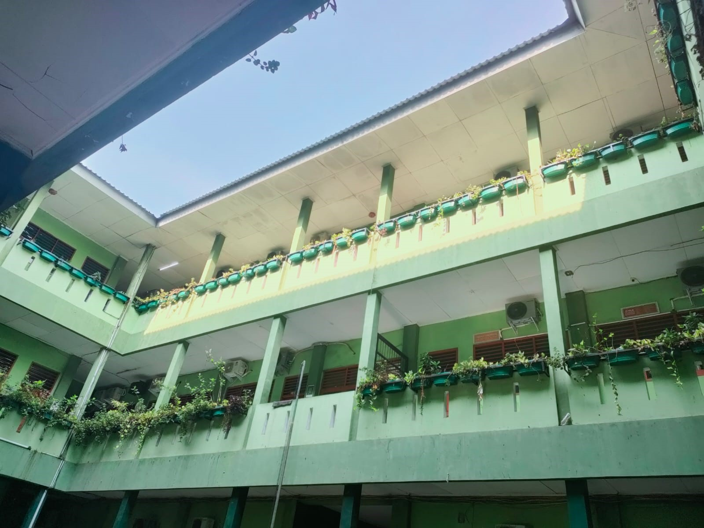

Profil SMA Tanjung Priok
SMA Tanjung Priok Jakarta menciptakan perpaduan yang kuat antara keunggulan akademik dan inovasi
Profil SMA Tanjung Priok
SMA Tanjung Priok Jakarta menciptakan perpaduan yang kuat antara keunggulan akademik dan inovasi
SMA Tanjung Priok, berdiri pada tahun 1985 dengan tanggal pendirian resmi pada 1 Juli 1985/1986 di bawah naungan Yayasan Dikantara. Pada masa itu, Drs. H. Nawawi Rambe menjabat sebagai Kepala Sekolah, didukung oleh Wakil Kepala Sekolah, Bapak Darwin. Sekolah ini dimulai dengan 19 siswa di jurusan IPA, berlokasi di kompleks yang sama dengan STM Perkapalan dan SMP Tanjung Priok, yakni di Jl. Mangga No. 3 Jakarta Utara. Guru-guru berasal dari STM, SMP Tanjung, dan sekolah lain yang sesuai dengan kebutuhan.
Pada tahun kedua, 1986/1987, jumlah siswa meningkat menjadi 35, dengan 17 siswa di jurusan IPA dan 18 siswa di jurusan IPS. Sistem pembelajaran diintegrasikan dan dibagi, dengan mata pelajaran umum digabungkan, sementara jurusan minat dipisahkan. Tahun ketiga menandai peningkatan jumlah ujian dibandingkan dengan tahun pertama. Pada tahun 1988, dengan rasa syukur, sekolah berhasil mencapai tingkat kelulusan 100%.
SMA Tanjung Priok, berdiri pada tahun 1985 dengan tanggal pendirian resmi pada 1 Juli 1985/1986 di bawah naungan Yayasan Dikantara. Pada masa itu, Drs. H. Nawawi Rambe menjabat sebagai Kepala Sekolah, didukung oleh Wakil Kepala Sekolah, Bapak Darwin. Sekolah ini dimulai dengan 19 siswa di jurusan IPA, berlokasi di kompleks yang sama dengan STM Perkapalan dan SMP Tanjung Priok, yakni di Jl. Mangga No. 3 Jakarta Utara. Guru-guru berasal dari STM, SMP Tanjung, dan sekolah lain yang sesuai dengan kebutuhan. Pada tahun kedua, 1986/1987, jumlah siswa meningkat menjadi 35, dengan 17 siswa di jurusan IPA dan 18 siswa di jurusan IPS. Sistem pembelajaran diintegrasikan dan dibagi, dengan mata pelajaran umum digabungkan, sementara jurusan minat dipisahkan. Tahun ketiga menandai peningkatan jumlah ujian dibandingkan dengan tahun pertama. Pada tahun 1988, dengan rasa syukur, sekolah berhasil mencapai tingkat kelulusan 100%.
Sea Niko, S.E
Kepala Sekolah
Assalamu'alaikum wr. wb.
Kami bersyukur atas limpahan rahmat, hidayah, dan karunia Allah SWT yang memungkinkan kita untuk mengembangkan potensi dalam pendidikan. Kami sadar akan pesatnya perkembangan dunia internet, yang menjadi tantangan bagi
pendidikan. Oleh karena itu, SMA Tanjung Priok berupaya menjawab tantangan tersebut dengan membentuk Tim IT dan meluncurkan website sekolah ini. Kami berharap website ini menjadi sumber informasi publik tentang profil SMA
Tanjung Priok, media pengembangan diri bagi tenaga edukatif dan peserta didik, serta sarana komunikasi antara stakeholder sekolah dan masyarakat. Dukungan dari pengunjung kami harapkan untuk evaluasi dan pengembangan sekolah
ke depan.
Wassalamualaikum wr. wb
Assalamu'alaikum wr. wb.
Kami bersyukur atas limpahan rahmat, hidayah, dan karunia Allah SWT yang memungkinkan kita untuk mengembangkan potensi dalam pendidikan. Kami sadar akan pesatnya perkembangan dunia internet, yang menjadi tantangan bagi
pendidikan. Oleh karena itu, SMA Tanjung Priok berupaya menjawab tantangan tersebut dengan membentuk Tim IT dan meluncurkan website sekolah ini. Kami berharap website ini menjadi sumber informasi publik tentang profil SMA
Tanjung Priok, media pengembangan diri bagi tenaga edukatif dan peserta didik, serta sarana komunikasi antara stakeholder sekolah dan masyarakat. Dukungan dari pengunjung kami harapkan untuk evaluasi dan pengembangan
sekolah ke depan.
Wassalamualaikum wr. wb
Sea Niko, S.E
Kepala Sekolah


Unggul Dalam Mutu Berpijak pada Budaya Bangsa

Dinas Dikdas
DKI Jakarta
Yayasan
Dikantara
Kepala Sekolah
Sea Niko, S.E
Kepala Sekolah Tanjung Priok
Wakil Kepala Sekolah
Siti Juwariyah, M.Pd
Wakil Kepala Sekolah Bidang Kurikulum
Marwan Amir J, M.Pd
Wakil Kepala Sekolah Bidang Kesiswaan
Tri Setyowati, S.Pd
Wakil Kepala Sekolah Bidang Sarana Prasarana
Bidang Konseling
Neneng Supriyatin, S.Pd
Guru Bimbingan Konseling dan Penyuluhan
Pembina OSIS
Andi Shanti D, S.E
Pembina dan Penanggungjawab Osis